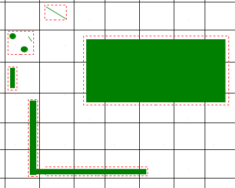
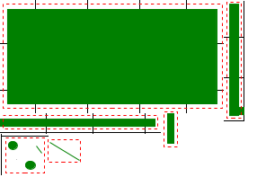
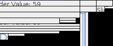

WebSurfaceData / Rendering:
One of the core components of caciocavallo-web is WebSurfaceData, an
implementation of OpenJDK's SurfaceData interface - which is basically
a surface Java2D can render to.
Whenever a rendering operation is executed, Java2D's software rendering
implementation "locks" the target WebSurfaceData, and supplies
cacio-web the area it plans to modify, which are passed to the
GridDamageTracker.
GridDamageTracker:
GridDamageTracker keeps a list of all modified areas of a
WebSurfaceData and groups those areas efficiently together, so that the
number of drawImage calls for the browser stays low but the amount of
wasted space caused by grouping stays low.
This is archieved by splitting the SurfaceData's area into square cells (by default 16x16 pixels).
- For small modified areas within such a square, a union rectangle is created:
- Adjacent cells with the same union rectangle dimensions are merged, to further reduce the amount of cells.
This pays off when e.g. drawing long lines or filling large rectangles.
The following graphic illustrates the functionality of GridDamageTracker.
The black lines illustrate the cell borders, green areas are areas
which are rendered to, and the read dashed reactangles are the areas
generated by GridDamageTracker's grouping algorithm.

TreeImagePacker:
TreeImagePacker packs the grouped areas it receives from GridDamageTracker
into a single image to improve compression and performance:

Transports:
After the grouped areas have been packed into a single image, the image
is compressed by the transport. Furthermore the data which describes,
which area of the packed image belongs where on the browser's canvas,
is encoded and transported.
The following image shows the resulting image of the ImageTransport, which
stores its command-stream embedded in the image data.
The image has been generated for dragging a JSlider, which updates
a JLabel's text. Without all those optimizations, the area to be transported
would have been 700x500px large, this one is 227x94 :)

Hint: to see the encoded command-information zoom the image, and look at
the image's first pixel row ;)